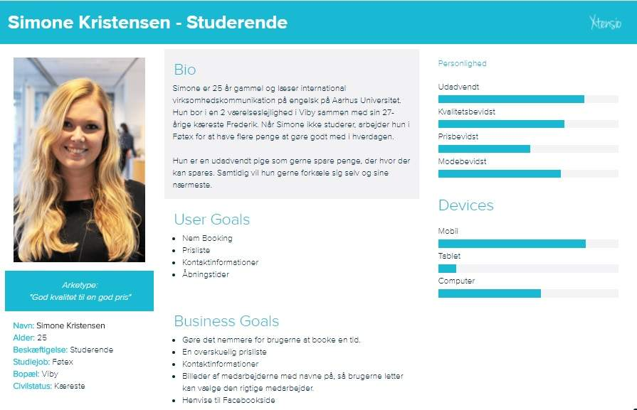
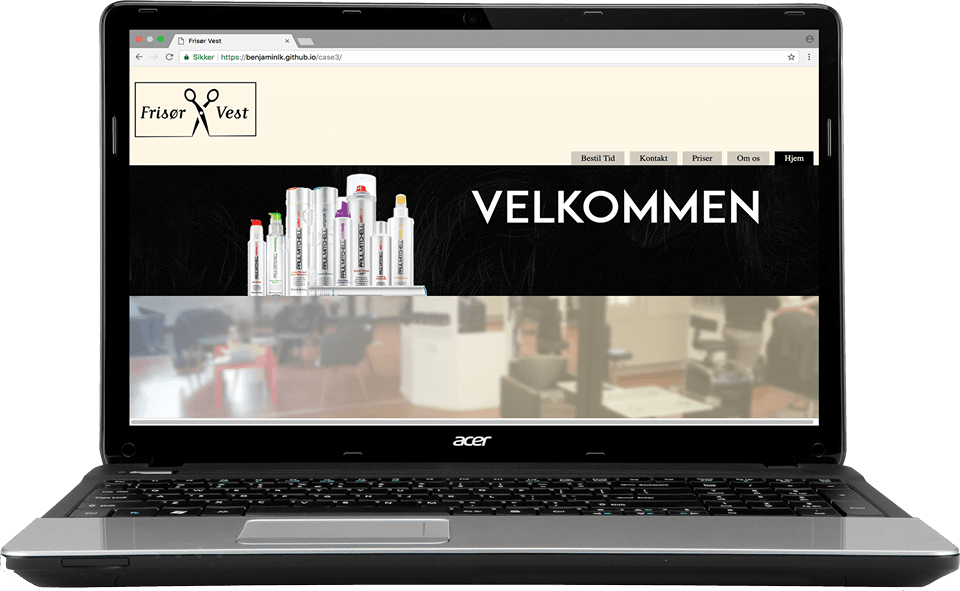

Case 3 - Responsiv webdesign
Kunde: Frisør Vest
Dato: 23. nov. 2017
Produkt: Responsiv hjemmeside
Case 3 – Responsive Web Design
Projektbeskrivelse
I dette projekt skulle vi arbejde med Mobile First, hvor man starter med at kode mobil, derefter tablet og så web. Vi skulle selv finde en kunde, som havde en rigtig dårlig hjemmeside, der ikke var responsiv eller en kunde der slet ikke havde en hjemmeside.
Virksomhed og Kommunikation
Ligesom i case 1 skulle vi ud og finde en kunde og interviewe kunden og dens målgruppe. Ud fra disse interviews skulle vi lave personas, hvilket gav mig en masse god læring. Det er en god måde at sætte ansigt på målgruppen og få beskrevet den typiske målgruppe.
Der er ikke super meget godt at sige om case 3. Samarbejdet fejlede i stor stil, da der var rigtig dårlig kommunikation. Det var meget svært for mig at komme i kontakt med gruppen, selvom det foregik via messenger. Til tider gik der en hel dag før jeg fik et svar fra nogen. Når vi havde aftalt at mødes på skolen, var der nogen der sov over sig og nogen der bare gav rigtig sen besked om, at personen ikke kunne komme. Det resulterede i at vi spildte meget tid på at vente på hinanden. Det utrolig dårlige samarbejde og den dårlige kommunikation med de andre gruppemedlemmer, gjorde at vi bare delte projektet op, så vi kunne sidde hjemme hver især og lave på projektet.
Design
Et af vores gruppemedlemmer sad meget hjemme og lavede på designet i stedet for at møde op til designtimerne, hvilket gjorde at vi andre ikke var særlig meget inde over designet. Det eneste tidspunkt jeg rigtig var inde over designet, var dagen før vi skulle aflevere projektet, hvor alle endelig mødte op, og jeg derfor kunne komme med rettelser og enkelte forslag. Med andre ord, var det ikke meget, jeg fik ud af det designmæssige i projektet.
Interaktion
Pga. den utrolig dårlige kommunikation og dårligt initiativ fra de andre gruppemedlemmer, endte det med, at jeg stod for hele kodningen. Det betyder at jeg fik ret god læring i at bruge media queries. Jeg var slet ikke øvet i at bruge media queries før projektet, og vidste derfor ikke rigtigt, hvordan det skulle stilles op. Derfor havde jeg bare al css, der blev brugt til mobil og web indeni hver deres media query, i stedet for at samle al den styling, der var fælles for alle enheder øverst i css. Det havde den betydning at der var meget css, der gik igen.
Da jeg ikke kodede før vores mockups var færdige, betød det at kodningen af hjemmesiden kom til at ligne mockups nogenlunde i stedet for omvendt. Først tænkte jeg, at jeg ikke kunne nå at få det til at ligne designet på den korte tid, når jeg var alene om al kodningen, men jeg synes selv det lykkedes rimelig godt.
Konklusion
Jeg kan konkludere, at projektprocessen slet ikke forløb optimalt. Det utrolig dårlige samarbejde fik et gruppeprojekt til at føles som et individuelt projekt. Det med at dele projektet op i flere opgaver og så uddele opgaverne fungerer ikke, når man sidder derhjemme hver for sig og ikke kan komme i kontakt med resten af gruppen. Næste gang jeg kommer ud for et ikke fungerende gruppearbejde, vil jeg som en start snakke med gruppen om, hvordan vi er nødt til at samarbejde for alles skyld, og hvis ikke det løser problemet, vil jeg gå til en af underviserne og snakke om, hvordan vi kan løse problemet. Jeg vil på ingen måder, lade andre i gruppen ødelægge et projekt for mig igen.
Jeg har lært, hvor stor en forskel det faktisk gør, at ma får færdiggjort sine mockups, før man går i gang med kodningsdelen. Hvis man begynder at kode før man har nogle færdige mockups, så koder man lidt i blinde, da man ikke helt ved hvad man koder efter. Hvis man har et færdigt mockup, kan man forholde sig til farver, placering, skrifttyper osv. og så er det egentlig bare at kode, indtil man rammer sit design så godt som muligt.
Den feedback jeg har fået fra case 3, vil jeg tænke meget over, når jeg laver det næste projekt, så jeg ikke laver samme fejl med media queries osv.